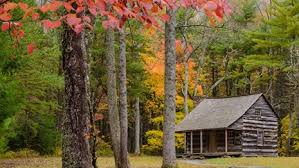

Cade's Cove
Cade's Cove is a settlement in the national park. When the park was established, there were still residents living there.
As resident's passed away or left, no further resident's were allowed in, and the settlement was preserved as it used to be.
